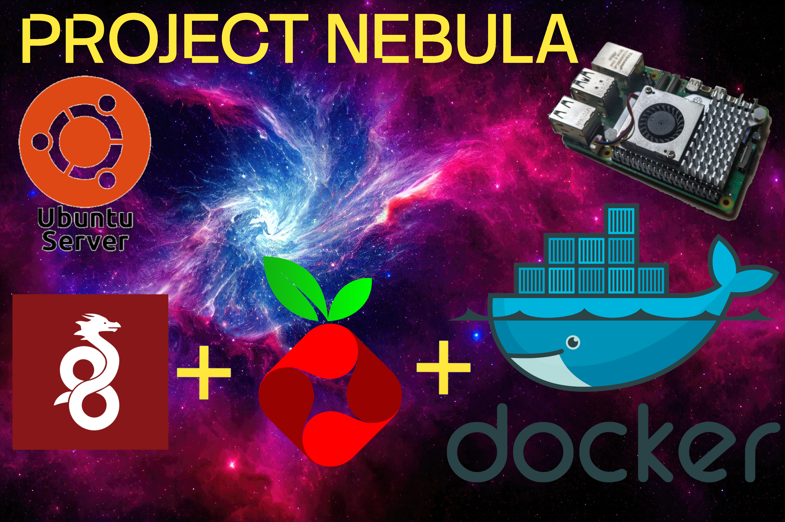

WIREGUARD

In this tutorial, you'll learn how to set up a WireGuard VPN server using Docker Compose, providing a secure and efficient way to access your network remotely. WireGuard is a modern VPN protocol known for its simplicity, performance, and ease of use.
Additionally, we will integrate Pi-hole into the same Docker Compose stack, allowing you to deploy a powerful network-wide DNS and ad-blocking solution alongside your VPN. By doing this, Pi-hole can serve as the DNS resolver for all devices connected through the VPN, as well as for the devices on your local LAN—centralizing DNS management and enhancing privacy across your entire network.
Using Docker Compose, you'll automate the creation and management of both containers, making deployment simple, reproducible, and easy to maintain. Throughout this guide, I'll walk you step-by-step through configuring the WireGuard server, adding clients, and integrating Pi-hole without complexity.
By the end of the tutorial, you'll have a fully functional VPN server with network-wide DNS filtering, ready to use from anywhere—whether you're at home, at the office, or on the go.
Let's get started!
Port Forwarding
The first step is to open port 51820 on your router and forward it to your server's IP address. This port will be used by WireGuard, and opening it is essential to allow external devices to establish a secure connection with your server.
You should verify that the port was successfully opened. To do this, create a temporary testing server listening on port 51820. Open the terminal and run the following command replacing 443 for 51820. The server will automatically stop once you end the command with Ctrl+c:
Open the following website and check port 51820. It should automatically detect your public IP address, set the test to port 51820, and verify whether the port is open.
can you see meNow, go to your terminal, stop the previous command by pressing Ctrl+C.
Stub Listener
As you need to have the port 53 available for your dns server pihole, you need to deactivate the stub listener.
Docker Compose
Download the compose.yaml file to your @wireguard subvolume.
Edit your compose.yaml file to include your domain, timezone and the peers that will connect to your server in the wireguard service, and in pihole set a password for your instance. You can check it in Timezones
Then deploy your stack with:
Set DNS
Set pihole as your dns. Make sure your only file is 50-cloud-init.yaml or change the command for your yaml file.
Add your hostname to the hosts list:
Configuration
Now you can add the lists of known advertisements ip's from the pihole web interface
#Servers-ip:880
Add the following aggresive list:
https://cdn.jsdelivr.net/gh/hagezi/dns-blocklists@latest/adblock/ultimate.txt
Or find a medium list in:
Hagezi GithubNow refresh your pihole configuration with:
Tools -> Update Gravity -> Update.
For Wireguard you can download the wireguard client app and connect to your server via QR Code, you can see your peer QR code to connect as:
sudo docker container logs wireguard